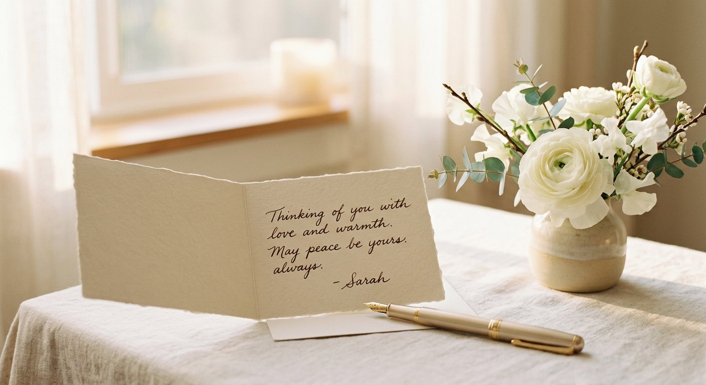

Consejos · 12 de agosto de 2026
Cómo escribir una esquela: ejemplos y qué debe incluir

La esquela es el aviso con el que se comunica el fallecimiento y se invita a la despedida. Redactarla puede resultar difícil en pleno duelo, así que le explicamos qué debe incluir, con ejemplos, para que solo tenga que personalizarla.
Qué debe incluir una esquela
- Nombre completo de la persona fallecida (y apodo cariñoso, si procede).
- Fecha del fallecimiento y, opcionalmente, la edad.
- Una frase de despedida o cita (religiosa o civil).
- Familiares que la despiden (cónyuge, hijos, nietos…).
- Lugar, día y hora del velatorio y de la ceremonia.
- Si se desea, indicaciones como "en la intimidad" o "se ruega no enviar flores".
¿Necesita ayuda ahora? Estamos disponibles las 24 horas. Llámenos al 910 000 000 y le atenderemos de inmediato.
Ejemplo de esquela (civil)
Doña [Nombre y Apellidos] falleció el [fecha], a los [edad] años. Su esposo, hijos y nietos agradecen sus muestras de cariño e invitan a la ceremonia de despedida, que se celebrará el [día] a las [hora] en el Tanatorio de [ciudad].
Ejemplo de esquela (religiosa)
Don [Nombre y Apellidos] descansó en la paz del Señor el [fecha]. Su familia ruega una oración por su alma y le invita a la misa funeral que se oficiará el [día] a las [hora] en la Parroquia de [nombre], en [ciudad].
Dónde se publica
Tradicionalmente en prensa, pero hoy la mayoría de esquelas se publican online (webs de tanatorios y funerarias, redes sociales) porque llegan antes y a más gente. Nosotros nos encargamos de redactarla y difundirla por usted.
Consejos para redactarla
- Sencillez: unas pocas líneas sinceras valen más que un texto largo.
- Cuide la ortografía de nombres y fechas.
- Si duda, use un modelo y personalícelo.
Si necesita ayuda para redactar y publicar una esquela en Madrid, Toledo o el sur de Madrid, llámenos: lo hacemos por usted, con cariño y sin coste añadido.